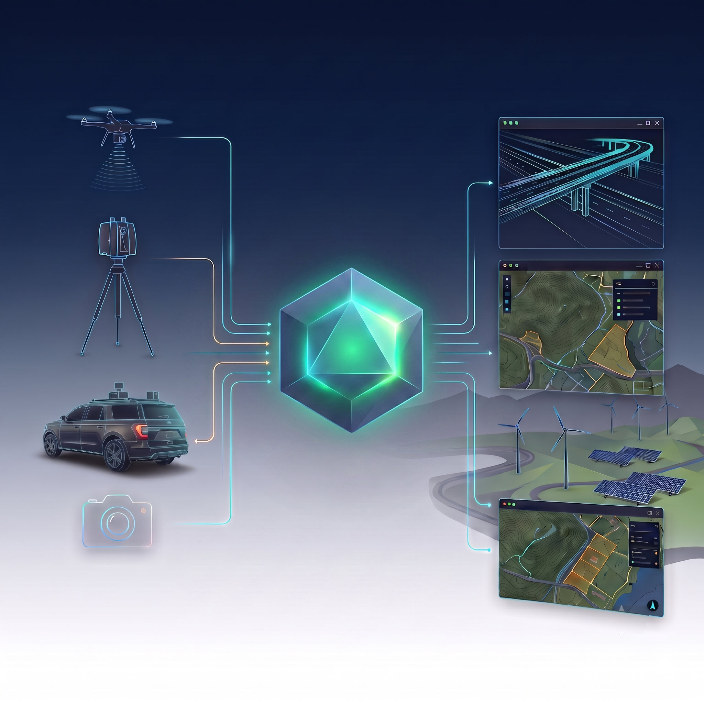

Advanced remote sensing data fusion, automated feature extraction, and tailored geospatial software engineering.

We specialize in the automated fusion, extraction, and distillation of massive remote sensing datasets—including UAS LiDAR, mobile LiDAR, SLAM scanning, photogrammetry, and terrestrial 3D reality capture—into lightweight, design-ready CAD and GIS assets. Delivering high-precision geomatics engineering support and custom software solutions tailored for infrastructure, renewable energy, and the AEC marketplace.
We bridge the gap between complex spatial sensor data and clean, lightweight datasets for engineering, construction, and public works.
We design, build, and license custom software solutions, processing pipelines, and proprietary digital tools tailored specifically for the geomatics and AEC industries. By leveraging automated feature extraction algorithms, our custom tools ingest massive point clouds and imagery data, distilling them into lightweight, actionable CAD and GIS assets. This drastically reduces data bottlenecks and manual processing time for complex survey frameworks.
Capture highly accurate elevation and topographic data through dense vegetative cover using high-precision aerial platform technologies. Our FAA Part 107 certified team conducts safe, compliant remote sensing flights across New Mexico to map critical public corridors and development sites. We deliver high-definition geodetic datasets, multi-angle imagery, and dense point clouds—all fully processed, filtered, and anchored to rigorous ground control baselines.
From boundary determinations to complex infrastructure control networks, our field and engineering support operations are overseen by a licensed New Mexico Professional Surveyor (NMPS) acting as Surveyor-in-Responsible-Charge. We pair veteran field expertise with cutting-edge reality capture technology to ensure spatial deliverables meet rigorous state statutory standards and structural requirements.
We provide comprehensive data processing, sensor alignment, and kinematic data fusion for rapid corridor mapping. Utilizing vehicular mobile LiDAR arrays and handheld SLAM (Simultaneous Localization and Mapping) scanning systems, we transform unorganized spatial data into localized, high-accuracy digital twins. These datasets are engineered to integrate seamlessly into civil engineering, design, and GIS asset tracking workflows.
Contact GeoIncite today to arrange a data consultation, schedule a remote sensing flight, or discuss custom software licensing options. Accelerate your timeline with design-ready datasets.
{kind=link}
{kind=link}
{kind=link}
{kind=link}
{kind=link}